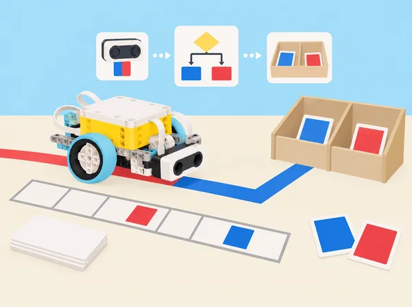

L’escola prepara una jornada de portes obertes i necessita assajar, només en maqueta, com donar indicacions a visitants, ordenar targetes de ruta i avisar quan una seqüència no coincideix amb el pla. Els equips programaran llistes de lectures de color, compararan dues seqüències posició per posició, faran que una base seguisca una línia i cree blocs propis per reutilitzar procediments. Al mini-repte final construiran un senyalador de taula que reacciona a un moviment de maqueta i a una targeta de color acordada. La situació adapta les sis lliçons de la unitat 7 Arrays, Boolean Expressions, and Conditionals de Foundations of Physical Computing. Les targetes i rutes representen informació inventada: cap muntatge identifica persones, controla portes o protegeix cap espai.
i, o, no, igualtat i desigualtat.Abans de començar, munteu una base mòbil estable amb el sensor de color orientat cap avall i comproveu que els ports coincideixen amb el programa. Prepareu una pista curta sobre cartolina mate, amb trams blancs i negres i una zona d’aturada en un color que el sensor puga llegir consistentment; afegiu al costat una tira de colors que servisca de control. Feu una prova amb la llum real de l’aula, la distància al paper i el llindar de detecció. Marqueu una àrea de circulació lliure i limiteu la velocitat. Si no hi ha sensor o la lectura no és estable, l’alumnat pot introduir les lectures en una taula manual i provar la mateixa lògica sense robot; anoteu que és simulació.
Organitzeu equips de tres o quatre amb rols rotatius: disseny de casos de prova, programació, calibratge/registre i comunicació. Cada equip manté un diari breu per sessió amb predicció, canvi efectuat, resultat i següent pas. Reserveu peces del set en safates, carregueu els hubs i assegureu un dispositiu amb l’app SPIKE. La seqüència no depén d’un model “Game Master” o “Quality Check” de les lliçons LEGO ni reprodueix les seues instruccions de muntatge.
Pregunta: com guardem l’ordre d’una ruta perquè es puga llegir després? En parelles, poseu cinc targetes de color en una bossa opaca i traieu-les una per una, col·locant-les d’esquerra a dreta en una tira numerada. Registreu la seqüència dues vegades: una amb paraules i una amb codis numèrics assignats pel grup. Feu una segona extracció tornant cada targeta a la bossa abans de traure’n una altra; compareu-la amb una extracció sense reposició i expliqueu per què en una poden repetir-se colors i en l’altra no. A continuació, creeu una llista en l’app anomenada Lectures, inicialitzeu-la buida, llegiu una targeta amb el sensor i afegiu el valor a la llista en intervals acordats. Abans de programar la seqüència completa, escriviu pseudocodi: quan comença, buida la llista; repeteix N vegades; llig el color; afegeix el valor; espera; mostra la dada. Proveu cinc entrades en un ordre conegut i comproveu que l’ordre registrat coincideix. Discussió: quina informació desapareixeria si només comptàrem quants colors de cada tipus hi ha? Què significa una lectura inesperada? Tanqueu amb una definició pròpia de llista, exemple i contraexemple.
Pregunta: quan són iguals dues seqüències i com localitzem el primer desacord? Cada equip rep dues rutes fictícies de cinc estacions, representades per peces o targetes en filera. Escriviu un algorisme que compare el primer element de cada llista, continue només si coincideixen i indique “coincidència” quan totes les posicions són iguals; si una posició difereix, deseu la primera posició discrepant i atureu la comparació. Feu una traça manual amb tres casos: llistes iguals, diferència inicial i diferència final. Després intercanvieu el pseudocodi amb un altre equip perquè el prove amb llistes sorpresa, incloent una seqüència de longitud desigual; anoteu si el programa falla o produeix un fals positiu. Si la versió de l’app permet treballar amb llistes i índexs, implementeu la comparació amb lectures de color de dues tires; si no, manteniu les llistes en paper i programeu la condició de coincidència amb valors introduïts o blocs equivalents disponibles. Completeu una taula de veritat per a dos elements i compareu una regla “tots iguals” (AND) amb una regla “almenys un coincideix” (OR). Producte: un procediment de comparació provat i una explicació de per què l’ordre forma part de les dades.
Pregunta: com transforma una lectura del sensor en correccions repetides? En una primera pràctica desconnectada, una persona fa de robot i una altra dona instruccions “si lligues fosc, gira lleument cap a la línia; si lligues clar, corregeix cap a l’altre costat”; el grup identifica els subproblemes que es repeteixen. Amb la base mòbil i sensor de color, proveu primer una regla senzilla d’aturada en una línia fosca. Després avanceu a seguir una pista ampla: el robot llig el valor reflectit/color, ajusta la direcció i repeteix. Useu dades en directe per comprovar què detecta el sensor, feu una primera volta a velocitat baixa i marqueu on se n’ix o oscil·la. Modifiqueu una sola cosa per prova (llum, amplària de línia, llindar, velocitat o orientació), no diverses alhora. Alceu deliberadament un cas de prova amb una línia de color que no s’havia acordat i observeu si la regla la confon. Descomponeu després el programa en blocs propis amb noms funcionals, per exemple SeguirPista i AturarEnMarca; torneu a cridar el bloc des del programa principal i compareu la llegibilitat. No prometeu seguiment robust en qualsevol superfície o il·luminació.
Pregunta: què ha de ser cert perquè la maqueta done una indicació? Dissenyeu una estació fictícia que només active el senyal de “continua” si el robot és dins de la zona de prova i ha llegit el color d’autorització; amb o, feu que una lectura de dos colors alternatius active una indicació de “consulta el mapa”; amb no, distingiu que una condició no s’ha complert sense convertir l’absència en una alarma. Representeu cada condició amb frases simples, símbols, taula de veritat i casos de prova, incloent llindar just per damunt/baix de la distància escollida. Després programeu el comportament en un o més blocs propis amb comentaris; si l’app permet entrades paràmetre, feu un bloc configurable, i si no, expliqueu la limitació i reutilitzeu el bloc amb valors fixos. Proveu tots els casos de la taula i feu traça d’un cas inesperat. Compareu el programa original amb la versió descomposta: localitzeu una errada deliberada al bloc secundari i useu la descomposició per trobar-la. Tanqueu escrivint en llenguatge natural la diferència entre “A i B”, “A o B” i “no A”; eviteu dir “o” en sentit ambigu inclusiu/exclusiu sense especificar-lo.
Repte: prototipar un indicador de taula per a una jornada de portes obertes que detecte l’arribada d’un objecte de prova i demane una seqüència de colors fictícia per a triar una ruta dins de la maqueta. No es protegeix cap porta ni es controla el pas de persones. Definiu requisits mesurables: un avís només després de detectar el marcador de proximitat; una seqüència de dos o tres colors ha de coincidir en ordre; una lectura diferent mostra “revisar ruta” i permet reiniciar; el sistema no ha d’emetre més d’un avís per intent. Escriviu pseudocodi i un diagrama d’estats abans de connectar el sensor de distància, el sensor de color i els llums/sons del hub. Creeu llistes per a la seqüència esperada i la llegida, combineu operadors i descomponeu alarma, lectura i reinici en blocs propis. Verifiqueu una matriu mínima de proves: aproximació absent/present; seqüència correcta; primer color incorrecte; segon color incorrecte; ordre invertit; retirada durant la lectura; reinici després d’error. Registreu fallades i una iteració del disseny. Si el kit o l’app no exposa una funció necessària, useu un botó del hub, una entrada manual o una representació en targetes, i etiqueteu-la com a alternativa; no afirmeu autenticació o seguretat real. Acabeu amb una demostració a altres equips i una revisió de requisits punt per punt.
Pregunta: quins coneixements fan que un servei d’acollida siga útil, inclusiu i comprensible? Exploreu rols de recepció, guia, interpretació, accessibilitat, organització d’esdeveniments i administració municipal, emprant fonts públiques preparades per la docent. Distingiu professió, tasca diària, competències, formació i responsabilitats; compareu com canvien les necessitats d’una visita escolar, d’un museu o d’una oficina d’informació turística. Cada equip tria un perfil sense haver de vincular-lo amb les preferències personals de cap alumne, representa amb peces/cartó un punt d’informació o part d’un itinerari accessible, i connecta una tasca amb l’ús de llistes i condicions d’aquesta unitat. Prepareu una explicació d’un minut que incloga una decisió humana que el prototip no pot prendre, una pregunta que caldria fer a les persones usuàries i un límit de la maqueta. Feu una galeria d’explicacions i una autoavaluació voluntària i privada sobre interessos, habilitats practicades i una pregunta per investigar més endavant.
Abans de programar, representeu verbalment les condicions i després comproveu-les amb casos. Per a una estació de maqueta, prop_i_color_correcte només és certa si les dues proves són certes; si falta qualsevol lectura, el senyal no s’activa. Una regla inclusiva de ruta pot ser color_blau_o_color_vermell. Una taula de veritat amb totes les combinacions impedeix confiar només en el cas feliç i fa visible què significa cada operador. Per a llistes, escriviu les posicions inicials i compareu els elements en el mateix ordre. Aquesta notació és suport conceptual: els blocs exactes, la gestió d’índexs i els valors disponibles poden variar segons la versió de l’app.
Set SPIKE Prime 45678, hub carregat, base mòbil amb sensor de color i, per al mini-repte, sensor de distància; dispositiu amb app SPIKE, cartolina clara/mate, cinta opaca per a línies, targetes de color de mostra, tires de seqüències, peces grans de classificació, obstacles tous, paper i quadern. No es requereixen els models oficials Game Master o Quality Check Robot. Prepareu targetes accessibles amb paraules/símbols a més del color, i una variant manual completa quan la lectura del sensor no siga fiable. Reduïu velocitat, manteniu la base dins de la pista i atureu el programa abans de reposicionar-la.
Guardeu llistes d’exemple, pseudocodi llegit per un altre equip, registres de sensor, comparador provat amb coincidència/diferència/desigualtat de longitud, taules de veritat, programa segmentat en blocs propis, registre d’iteracions del seguidor de línia i matriu de proves del mini-repte. Useu una escala descriptiva de quatre nivells per a: (1) estructura i ordre de les llistes; (2) correcció de condicions i operadors; (3) proves que inclouen casos límit i depuració documentada; (4) reutilització clara de blocs; (5) comunicació de límits i col·laboració. No puntueu només que el robot “funcione”: l’alumnat pot demostrar comprensió amb simulació en paper o explicació traçada quan hi ha limitacions de maquinari. Coavaluació: identifica una prova que falta i proposa com afegir-la.
Permeteu treballar amb seqüències tàctils, targetes etiquetades i pseudocodi en lloc de discriminar colors visualment. Cap alumne ha d’actuar com a “visitant” sota una falsa alarma, compartir interessos professionals personals ni descriure situacions de seguretat de sa casa. Totes les dades són inventades i referides a targetes o objectes de maqueta. Eviteu tons d’alarma intensos; oferiu senyal visual, patró suau o text equivalent. Distribuïu els rols i assegureu que tothom pot contribuir a una part tècnica o de disseny sense haver de conduir el robot.
Adapta les sis lliçons de la unitat 7 Arrays, Boolean Expressions, and Conditionals del curs LEGO Education Foundations of Physical Computing: Intro to Arrays (Lists) & Compound Conditionals, Comparing Arrays (Lists), Conditionals and Simplifying Code, Conditionals and Boolean Expressions, Mini-Challenge: Security Alarm Using Operators i Connecting to Careers: Hospitality & Tourism and Government & Public Administration. Manté la creació i lectura de llistes amb sensor, la seqüència aleatòria/reposició com a idea de repte, la comparació de seqüències, el seguiment de línia i els blocs propis, la lògica composta, la prova iterativa d’un dispositiu i la recerca professional; canvia els jocs, objectes i contextos per recursos originals d’una jornada escolar. El prototip d’indicador és expressament no segur i no es fa servir per protegir persones o espais.